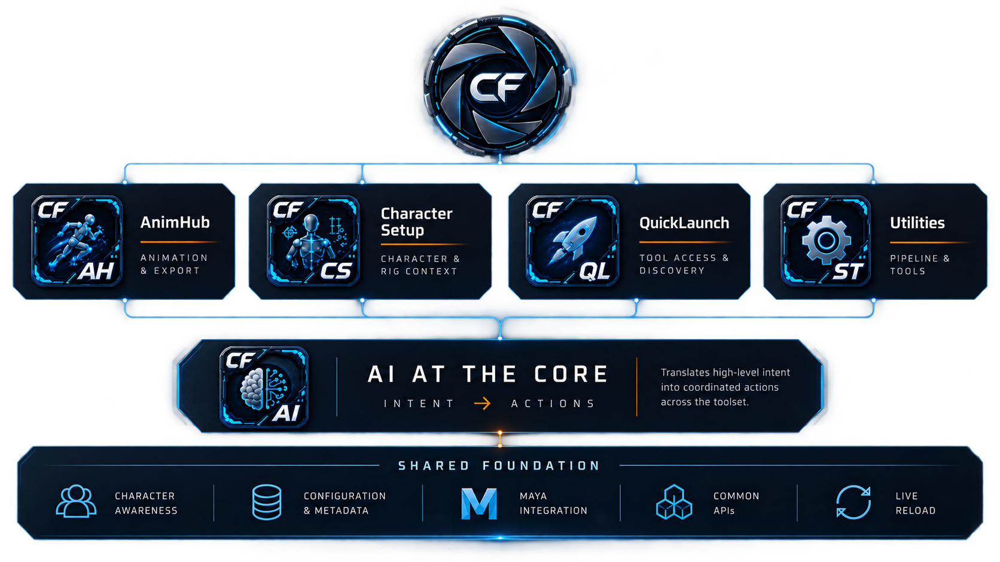
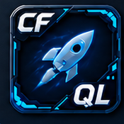

Core Flow Tools — Technical Documentation
Core Flow Tools is an independent, clean-room Maya/DCC pipeline suite built from a three-tier architecture: a set of production applications, a shared AI core that gives those applications controlled, curated AI assistance, and a common foundation every tool is built on. Nothing here is copied from any prior codebase - the design is informed by real production workflows, but every implementation is original.
This site documents the engineering: data models, APIs, safety architecture, and the design decisions behind each piece - not just how to click the buttons. Start with the architecture below, or jump straight to a tier in the sidebar.

Applications bind their own curated API (e.g. AnimHub's
ClipsAPI) into the shared AI Companion - the AI never gets raw,
unrestricted access. Every tier is built on the same shared foundation.
AI as a shared capability, not an autonomous agent
The AI Companion is a single, shared capability every
application can plug into - it is never given unrestricted access to
Maya. Each application hands it a small, curated, tested API scoped to
that application's own domain (AnimHub's ClipsAPI, for
example) plus a short "concepts primer" describing how to use it. The
model proposes Python against that curated surface; a human reads the
proposed script and clicks Run before anything executes, wrapped in a
single undo step.
That review step is the entire safety mechanism - not a sandbox, not an allow-list of individual commands. The curated API layer exists for a different, complementary reason: some operations have a real correctness trap that's easy to get subtly wrong even for a capable model (shifting the same animation curve twice through two different paths, moving a keyframe in a way that silently corrupts its playback, reordering a native command's own collision-prone flags). Rather than relying on prompt wording to keep the model out of those traps, the application exposes one tested, verified function instead - and every time a new trap has been found in production use, the fix has been to extend the curated surface, not to hope the wording holds up next time.
See AI Companion for the full safety model, and ClipsAPI for the documented history of exactly what this design has prevented.
Applications
Production tools artists and technical animators use directly - clip management, character rigging metadata, a pinned tool launcher, and small focused utilities.
The clip/take manager and FBX export pipeline - the largest application in the suite.
File-agnostic batch runner - queue any files, stack tagged (and AI-authored) scripts against them, run. Includes FFmpeg.
Authoring UI for a character-aware data model - control rig + export asset + attachments + sockets.

QuickLaunch →Pinned-tool launcher icons embedded directly into Maya's own ToolBox.
Small, focused tools that don't warrant their own application: a log/reporter, a secondary Outliner, an up-axis toggle, Settings.
AI Core
One shared AI Companion panel, plus the curated, tested APIs each application exposes to it - the capability boundary that keeps AI-generated code constrained and reviewable.
A natural-language-to-reviewable-Python-script panel any application can plug into.
The curated surface AnimHub exposes to the AI. Extending what the AI can safely do to a clip starts here.
The multi-provider backend underneath the AI Companion - client abstraction, the provider registry, the system prompt, key storage.
Shared Foundation
The base every application and the AI Core are built on - one dockable-window pattern, one auto-discovered menu system, one settings registry, one visual identity.
Dockable windows, menu discovery, the Settings dialog + registry, config, logging, the dev-reload tool, and the visual design system.
Design principles
A few things are true across every application in the suite, worth knowing before reading anything else.
Clean-room, not a port
Nothing here is copied from any prior codebase. Where a design is informed by a proven interaction pattern from real production experience, that's called out explicitly - but the implementation is always original.
Dockable applications, plain-dialog children
A top-level application is a DockableWindow subclass. A
dialog opened from within an application (Settings, Script History, a
batch-rename prompt) stays a plain QDialog. See
Framework.
Live-write, not Apply/Save/Cancel
Almost every field in every application persists the moment you edit it. There's no batched "Save" step to remember, and no separate "did I save?" state to track.
Thorough "why" documentation over external docs, historically
Most of this codebase explains its own reasoning inline - confirmed-live gotchas, rejected alternatives, real bugs that shaped a design. This site pulls the important threads together, but the underlying implementation remains the deepest source of truth for any single function's exact behavior.